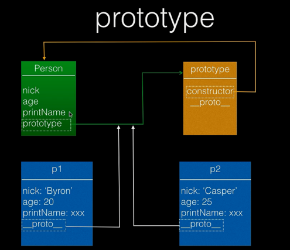

类型和实例
类型是实例的模板，实例从类型中
new出
类型：
- 简单类型
- Number
- Boolean
- String
- Null
- Undefined
- 复杂类型object
- Array
- Date
- Function
实例
|
|
缺点：太麻烦了，每次都是复制一遍代码来更改;代码使用者必须了解对象的细节
使用方法构造
|
|
优点：解决了构造复杂和需要了解细节的问题
缺点：构造出来的实例都是Object，没有识别度
构造函数
- 任何函数使用
new表达式就是构造函数 - 每个函数都自动设置了
prototype属性，这是一个对象 - 每个对象都有一个内部属性
__proto__指向其“类型”的prototype属性 - function实例作用域内有一个
constructor属性，这个属性就可以指示其构造器
|
|
优点：解决了上面的所有问题，而且为实例带来了类型
缺点：每个实例的“方法”是重复的；大量对象存在的时候浪费内存
解决重复问题的措施：我们可以把重复的方法提取出来，写在另外一个地方：
- 所有的实例都会通过原型链引用到类型的
prototype prototype相当于特定类型所有实例都可以访问到的一个公共容器- 重复的东西移动到公共容器里就好了

所以把代码改成这样：
或者用字面量形式
原型链
- 实例与原型对象之间的链条;
- 原型对象除了有原型属性外，为了实现继承，还有一个原型链指针
proto，该指针指向上一层的原型对象，而上一层的原型对象的结构依然类似，这样利用proto一直指向Object的原型对象上，而Object的原型对象用Object.proto = null表示原型链的最顶端，如此便形成了javascript的原型链继承，同时也解释了为什么所有的javascript对象都具有Object的基本方法。
简单的函数作用域
|
|
三种变量
- 静态变量，也就是属性，类型访问
- 实例变量，只有实例可以访问
- 私有变量，只有函数内部可以访问
|
|
this-类型的当前实例-this并不是固定的表示谁，而是基于运行时的环境；是哪个实例就表示谁；
继承
子类要继承父类的属性和父类的方法
寄生组合式继承
|
|